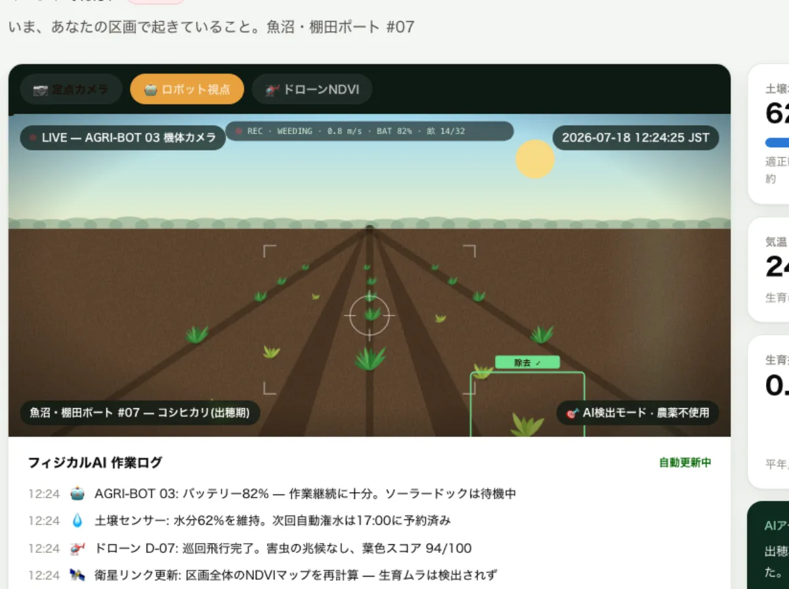
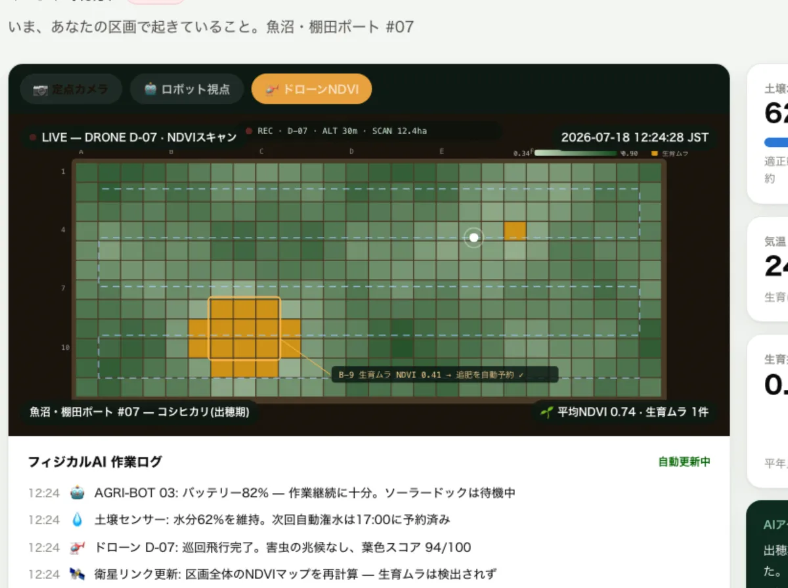

労働はフィジカルAIへ。
参加はアプリへ。
1 選ぶ 1口1万円からポートのオーナーに
1口1万円からポートのオーナーに
1口1万円からポートのオーナーに2 観る 推し農場をライブでオブザーブ
推し農場をライブでオブザーブ
推し農場をライブでオブザーブ3 受け取る リターンは野菜・お金・地球
リターンは野菜・お金・地球
リターンは野菜・お金・地球Agri Port — アプリDE農業。フィジカルAIが耕し、あなたが育てる。
1口1万円から始める、観察型・投資型の参加農業プラットフォーム。
1口1万円からポートのオーナーに推し農場をライブでオブザーブリターンは野菜・お金・地球
🤖 ロボット視点 — 雑草をAI検出し、農薬ゼロで除去
🚁 ドローンNDVI — 生育ムラを検出し追肥を自動予約前払購入契約=金商法の対象外。登録不要で即日開始できるMVP。
匿名組合×二種業提携でスケール。市場流通で48.5%だった生産者手取りが7割超に。
土壌炭素をクレジット化。観察する艦隊がそのまま検証(MRV)インフラになる。
収穫ロボはRaaSで稼働中(inaho・AGRIST)。ヒューマノイドはBMW工場で実稼働。農機最大手John DeereはヒューマノイドApptronikに$520Mを出資。
欧州CrowdFarmingは樹木アダプション30万件・売上€65M。「観て、受け取る農業」に人はお金を払う。
農地リースは2009年に全面自由化(最長50年)。野菜リターンなら金融規制の外で今日始められる。
世界の耕作放棄地は約1億ha — 日本の荒廃農地はその縮図。高齢化は韓国・EU・中国が後を追う。
日本で解けた農業OSは、そのまま地球の標準になる。リターンに「地球(カーボン)」を加え、数万人の観察者と艦隊がカーボンクレジットの検証インフラを兼ねる。
担い手30万人の時代に、関わる人1,000万人の農業をつくる。
「地球で無人農業を解けない種は、
火星でも耕せない。」